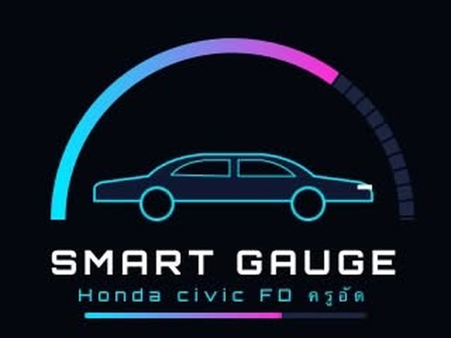
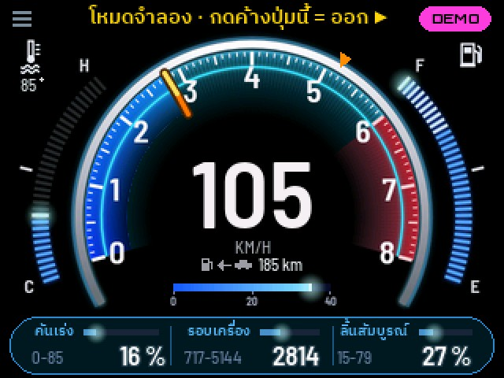
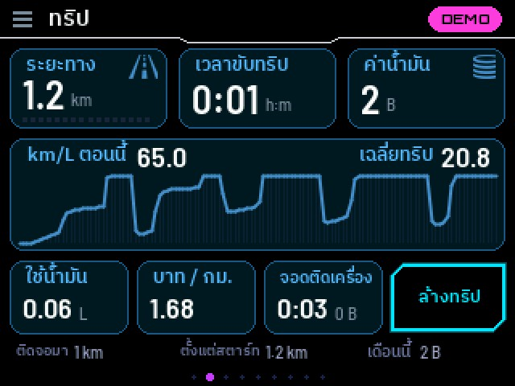
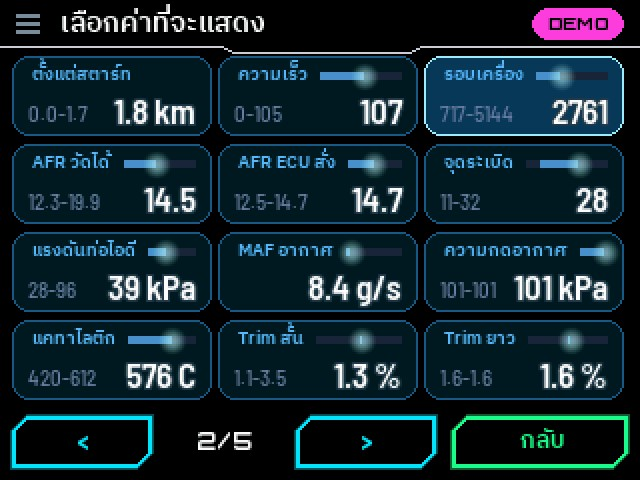
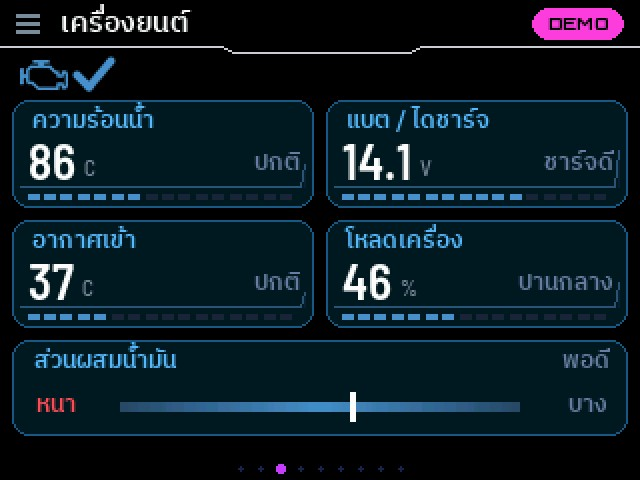
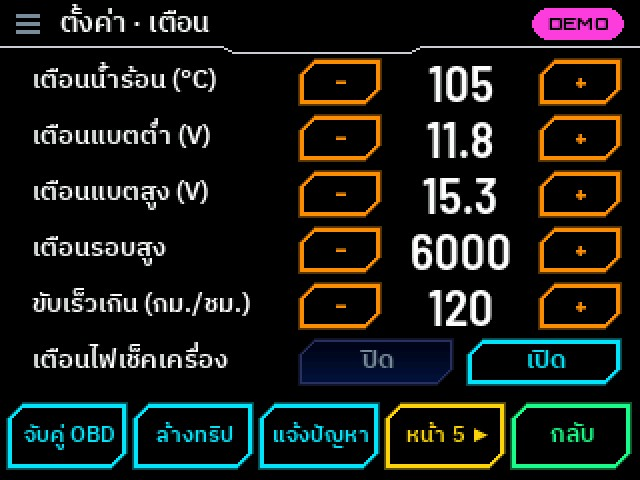

ติดตั้ง SMART GAUGE Honda Civic FD
เกจวัดรถยนต์บนจอ CYD (ESP32-2432S028R จอเหลือง 2.8") อ่านค่าจากช่อง OBD2 ของรถผ่าน ELM327 Bluetooth ติดตั้งครั้งแรกหรืออัปเดต ไม่ต้องลงโปรแกรม ใช้ได้ทั้งคอมพิวเตอร์ (Chrome หรือ Edge) และมือถือ Android (Chrome กับสาย OTG)
เปิดหน้านี้ด้วย Google Chrome หรือ Microsoft Edge บนคอม หรือ Chrome บนมือถือ Android · iPhone และ iPad ใช้ไม่ได้ (Apple ไม่เปิดให้เว็บใช้พอร์ต USB)
สิ่งที่ต้องมี
- บอร์ด CYD ESP32-2432S028R (ทุกรุ่นจอ เกจตรวจเอง)
- ELM327 แบบ Bluetooth รุ่นธรรมดา (จับคู่ด้วยรหัส 1234 ตัวสีฟ้าเล็กที่ขายทั่วไป) · ใช้ไม่ได้: แบบ WiFi และแบบ BLE สำหรับ iPhone
- รถที่มีช่อง OBD2 (ส่วนใหญ่รถเก๋ง/กระบะตั้งแต่ประมาณปี 2008)
- ไฟเลี้ยงบอร์ดในรถ: สาย USB จากที่ชาร์จในรถ หรือพาวเวอร์แบงก์
1. เสียบบอร์ด
- คอม: เสียบด้วยสาย USB ที่ส่งข้อมูลได้ และปิดโปรแกรมอื่นที่อาจใช้พอร์ต เช่น Arduino IDE, Serial Monitor
- มือถือ: ใช้สาย USB-C ↔ USB-C หรือหัวแปลง OTG จอบอร์ดควรติด (OPPO, realme, vivo บางรุ่นต้องเปิด “การเชื่อมต่อ OTG” ในตั้งค่าก่อน)
2. เลือกแบบติดตั้ง
ไม่ต้องเลือกรุ่นจอ: เกจตรวจจอ (ILI9341 / ST7789) แล้วตั้งสีให้เองตอนเปิดครั้งแรก
3. ติดตั้ง
กดปุ่มแล้วเลือกบอร์ด (ชื่อมักเป็น “USB Serial”, “CH340” หรือ COM) แล้วกดเชื่อมต่อ
ตั้งค่าขั้นสูง / บันทึกการทำงาน
วิธีเชื่อมต่อ
ความเร็ว
สำรองเครื่องเดิม / คืนเครื่องเดิม
มีโปรแกรมอื่นอยู่ในบอร์ดแล้ว ไม่อยากเสีย? สำรองก่อน แล้วค่อยลอง DRAKO GAUGE ไม่ชอบก็คืนเครื่องเดิมได้ทั้งหมด (โปรแกรม ค่าที่ตั้ง และสิทธิ์ใช้งานของบอร์ดนั้น)
พร้อม
หลังติดตั้ง
- เปิดครั้งแรก: แตะ + ทั้ง 4 มุม แล้วแตะกล่อง OK เพื่อปรับทัชให้ตรง (ทำครั้งเดียว)
- เสียบ ELM327 ที่ช่อง OBD ของรถ (ส่วนใหญ่อยู่ใต้คอนโซลฝั่งคนขับ) แล้วติดเครื่อง เกจจะค้นหาเองภายใน 10–30 วินาที ป้ายมุมขวาบนเป็น OBD สีเขียว = อ่านค่ารถอยู่
- หาไม่เจอ: แตะ ≡ มุมซ้ายบน › จับคู่ OBD › แตะชื่อ (หรือเลข) ของ ELM327
- ปัดซ้าย/ขวา หรือแตะขอบซ้าย/ขวาของจอ = เปลี่ยนหน้า · จอไม่เปลี่ยนหน้าเอง
- แตะช่องค่า 3 ช่องด้านล่างหน้าหลัก = เลือกค่าที่จะแสดง (ค่าที่รถไม่ส่งมาจะไม่อยู่ในรายการ)
- ไม่มีรถ: กดค้างปุ่ม BT มุมขวาบน 2 วินาที = โหมดจำลอง ทุกค่าเดินเหมือนขับจริง ลองได้ทุกอย่าง ไม่บันทึกอะไร (กดค้างอีกครั้ง หรือปิดเปิดเครื่อง = กลับปกติ)
- ติดบอร์ดกลับหัว: ≡ › กลับจอ (หน้าตั้งค่าแรก) · ตัวหนังสือกลับด้านเหมือนส่องกระจก: ≡ › ปุ่ม กระจก แถวบนสุด
- รถคันอื่นที่ไม่ใช่ Civic: ≡ › รถ เลือกเบนซิน/ดีเซล เทอร์โบ รอบสูงสุด ความจุถัง · น้ำมัน › ลิตรตอน E ปรับให้ขีดน้ำมันตรงหน้าปัดรถ
- ราคาน้ำมันจริง นาฬิกา สภาพอากาศ: ≡ › มือถือ › เชื่อมต่อ WiFi (Hotspot มือถือ) ทำตอนเปิดเครื่อง
มีอะไรบ้าง
- หน้าหลัก: ความเร็ว (แตะ = รอบ) เข็มรอบ ความร้อนน้ำ น้ำมันในถัง km/L วิ่งได้อีกกี่ กม. + ช่องค่า 3 ช่องเลือกเองได้ 49 ค่า มีแถบและค่าต่ำ-สูง
- มังกรคู่ใจ: ฟักจากไข่ โต 4 ร่างตามระยะที่ขับจริง ขับนุ่มโตเร็ว · เดินทาง 8 สถานที่ แผนที่ + พาสปอร์ต · ตามสภาพอากาศจริง
- ระยะทาง: รวมทั้งหมด / ทริป / ตั้งแต่ติดเครื่อง + เวลาขับ · km/L ตอนนี้และเฉลี่ย
- ราคาน้ำมันจริง + ค่าน้ำมันเป็นบาท: ทริปนี้กี่บาท บาท/กม. จอดติดเครื่องเสียไปเท่าไร
- โค้ดเสียภาษาไทย: อ่าน/ลบโค้ด บอกความหมายและความด่วน 101 โค้ด
- เตือนเป็นแถบด้านบน: น้ำร้อน แบตต่ำ/สูง รอบสูง ไฟเช็คเครื่อง นัดเข้าศูนย์ ลืมมือถือ (ตั้งค่าเองได้)
- ข้อมูลทั้งหมด: ทุกค่าที่รถส่งมา 2 หน้า · เครื่องยนต์ อุณหภูมิ AFR O2 น้ำมันเครื่อง (ถ้ารถส่งมา) · กราฟย้อนหลังในช่องค่าเปิดได้ เลือกสีได้





ภาพจับจากจอจริง (ตัวเลขจากโหมดจำลอง) · ทดสอบกับ Honda Civic FC 2017
แจ้งปัญหา / ติดต่อ
ขอรหัสปลดล็อกมังกร + มือถือ (โปรโมชั่น 199 บาท) ส่งเลขเครื่อง DKG-xxxxxx · ใช้ไม่ได้ ค่าแปลก หรืออยากให้เพิ่มอะไร ทักมาทาง LINE ได้เลย
ส่ง: รุ่นรถ ปี · อาการ · รูปหน้า ≡ › แจ้งปัญหา ในเกจ (มีข้อมูลที่ผู้พัฒนาต้องใช้ และมี QR LINE เดียวกันนี้อยู่บนจอ)